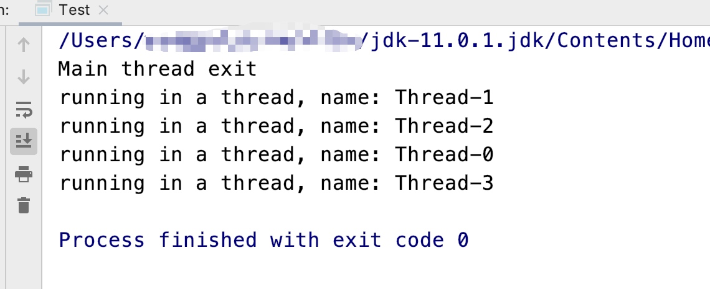
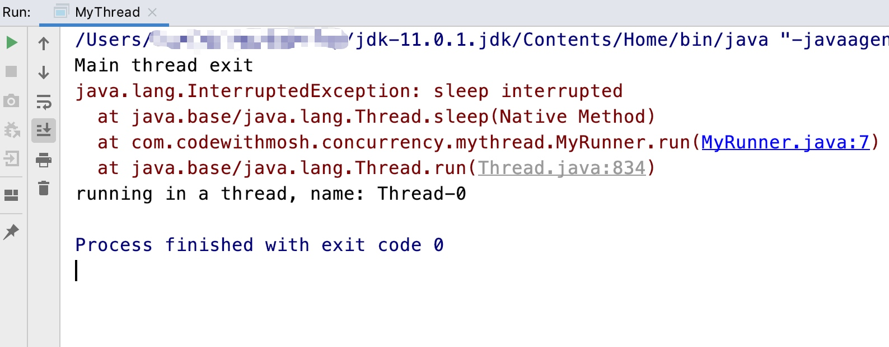
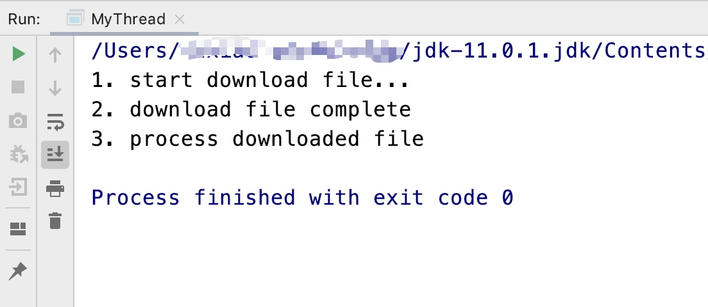

java相比python、php等脚本语言一个非常重要的区别就是java拥有真正的多线程控制技术，掌握多线程技术对于使用java语言至关重要
默认行为
- 主线程会等待所有子线程执行完成后退出
- 多个线程无序执行
创建线程
实现Runnable接口，在线程中执行的代码放到Runnable接口实现中，为实现类起个名字比如MyRunner：
public class MyRunner implements Runnable {
@Override
public void run() {
// 在线程中执行的代码
System.out.println("running in a thread, name: " + Thread.currentThread().getName());
}
}
创建线程对象java.lang.Thread，并将MyRunner作为线程执行体，然后调用Thread.start()方法启动线程
public class MyThread {
public static void main(String[] args) {
new Thread(new MyRunner()).start();
new Thread(new MyRunner()).start();
new Thread(new MyRunner()).start();
new Thread(new MyRunner()).start();
System.out.println("Main thread exit");
}
}
执行效果参考如下

可以看到这里主线程代码先执行完毕然后进入等待，子线程执行完成后，主线程退出
暂停线程
可以使用Thread.sleep()方法暂停线程的执行，比如暂停5秒
try {
Thread.sleep(5000);
} catch (InterruptedException e) {
e.printStackTrace();
}
可以看到线程调用Thread.sleep进入暂停状态后，可能在暂停过程中产生异常，这个异常表示收到了终止暂停状态的信号
终止线程的暂停状态
调用线程对象(java.lang.Thread)的interrupt()方法可以终止处于暂停状态的线程，使其恢复成执行状态
线程执行体MyRunner.java:
public class MyRunner implements Runnable {
@Override
public void run() {
try {
Thread.sleep(5000);
} catch (InterruptedException e) {
e.printStackTrace();
}
// 在线程中执行的代码
System.out.println("running in a thread, name: " + Thread.currentThread().getName());
}
}
调用线程的interrupt方法终止线程的sleep状态MyThread.java
public class MyThread {
public static void main(String[] args) {
Thread thread = new Thread(new MyRunner());
thread.start();
thread.interrupt();
System.out.println("Main thread exit");
}
}
执行效果如下：

可以看到线程的sleep被终止，并收到了InterruptedException异常
可以使用Thread.currentThread().isInterrupted()手动检查当前线程是否被中断过
主动等待子线程执行完毕
使用线程去下载一个文件，然后主线程在执行完一段业务逻辑后，需要使用线程下载的文件，这个时候，线程不一定已经将文件下载完成，主线程就需要等待子线程执行完成了
MyThread.java 模拟文件下载线程
public class MyRunner implements Runnable {
@Override
public void run() {
System.out.println("1. start download file...");
try {
Thread.sleep(5000);
} catch (InterruptedException e) {
e.printStackTrace();
}
System.out.println("2. download file complete");
}
}
主线程使用join()方法等待线程执行完成
Thread thread = new Thread(new MyRunner());
thread.start();
try {
thread.join();
} catch (InterruptedException e) {
e.printStackTrace();
}
System.out.println("3. process downloaded file");
执行效果参考如下：

线程间状态通知技术wait()和notify()
线程1: 下载文件
线程2: 在文件下载完成后，对文件进行处理
DownloadStatus.java在线程间传递文件下载状态
public class DownloadStatus {
private boolean isFinish = false;
public boolean isFinish() {
return isFinish;
}
public void setFinish(boolean finish) {
isFinish = finish;
}
}
下载文件线程 DownloadThread.java
public class DownloadThread implements Runnable {
private DownloadStatus status;
public DownloadThread(DownloadStatus status) {
this.status = status;
}
@Override
public void run() {
try {
Thread.sleep(5000);
} catch (InterruptedException e) {
e.printStackTrace();
}
System.out.println("file in thread download finished.");
status.setFinish(true);
synchronized (status) {
status.notifyAll();
}
}
}
可以看到文件下载完成后将下载完成标志isFinish置为true，并调用了状态对象的notifyAll()方法
处理文件线程
DownloadStatus status = new DownloadStatus();
Thread thread = new Thread(new DownloadThread(status));
thread.start();
new Thread(() -> {
while (!status.isFinish()) {
synchronized (status) {
try {
status.wait();
} catch (InterruptedException e) {
e.printStackTrace();
}
}
}
System.out.println("process download file");
}).start();
文件线程中启动死循环检测文件是否下载完成 while !status.isFinish()，并在循环体中调用wait()方法等待下载状态对象的通知
使用notifyAll()和wait()进行状态变更通知是为了避免死循环占用过多的cpu资源
多线程保证变量安全技术
多线程变量安全指多个线程对同一个变量进行修改，其修改后的结果符合预期
1. 每个线程使用独立的变量，在全部线程执行完成后，对每个线程中的变量进行汇总
2. 对变量进行加锁，加可重入锁
lock = new ReentrantLock();
lock.lock();
// 对变量进行修改的code
lock.unlock();
3. 使用synchronized关键字
synchronized(需要检测的对象) {
// 对变量进行修改的code
}
4. volatile关键字：使cpu不将内存中的变量放到cpu缓存中，避免多线程变量可见性问题
private volatile bool isFinished;
5. atomic系列类， java.util.concurrent.atomic
private AtomicInteger count;
一些注意的点
- notify通知一个wait()的线程，notifyAll通知所有wait的线程
- 多线程集合对象可以使用synchronized集合保证线程安全
Collection<Integer> intList = Collections.synchronizedCollection(new ArrayList<>()) - 多线程hash表对象可以使用ConcurrentHashMap保证线程安全
Map<Integer, String> map = new ConcurrentHashMap<>()